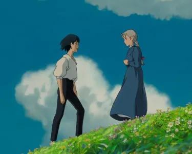
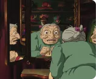

<!DOCTYPE html>
<html lang="fr" x-data="{menuIsOpen: false}" :class="{noscroll:menuIsOpen}"></html>>
<head>
    <meta charset="UTF-8">
    <meta name="viewport" content="width=device-width, initial-scale=1.0">
    <title>Accueil</title>
    <link rel="stylesheet" href="/src/css/style.css"> 
    <script defer="" src="https://unpkg.com/alpinejs@3.4.2/dist/cdn.min.js"></script>
</head>
<body>

    <header class="header">

        <a class="titre-header" href="/index.html"> 
            <h1> Mystic Howl</h1>
        </a>

        <button aria-controls="mainNav"  
            @click="menuIsOpen = ! menuIsOpen"
            class="header__menuBtn"  aria-controls="mainNav">
            
        </button>
   
        <nav  id="mainNav" 
        x-show="menuIsOpen" 
        x-transition.duration.800ms
        class="header__nav" id="mainNav">
        
               <ul>
                   <li class="menu__item" ><a class="menu__link" href="/fr/chateau_ambulant.html">Château ambulant</a></li>
                   <li class="menu__item" ><a class="menu__link" href="/fr/avec_lage.html">"Avec l'âge on apprend à devenir plus malicieux"</a></li>
                   <li class="menu__item" ><a class="menu__link" href="/fr/Hayao_miyazaki.html">Hayao Miyazaki</a></li>
                   <li class="menu__item" ><a class="menu__link" href="/fr/filmographie.html">Filmographie</a></li>
                   <li class="menu__item" ><a class="menu__link" href="/fr/joe_hisaishi.html">Joe Hisaishi</a></li>
                   <li class="menu__item" ><a class="menu__link" href="/fr/chateau_hurle.html">Le château de Hurle</a></li>
                   <li class="menu__item" ><a class="menu__link" href="/fr/glossaire.html">Glossaire</a></li>
                   <li class="menu__item" ><a class="menu__link" href="/fr/autre_projets.html">Autres projets</a></li>
                   <li class="menu__item" ><a class="menu__link" href="/fr/apropos.html">À propos</a></li>
                </ul>
            </nav>

          
    </header>

    <main class="main">
        <section class="section-image">
            <h2 class="titre-section-image">"Avec l'âge, on apprend à devenir plus malicieux"</h2>
            
            <p class="sous-texte-section-image">image tirée du film</p>
            <p class="texte-section-image">Bienvenue sur MysticHowl ! Explorez cet univers magique et découvrez des articles captivants sur ce film emblématique, son thème musical envoûtant, et le réalisateur de génie, Hayao Miyazaki. Plongez dans les secrets du château en mouvement, suivez les aventures de Sophie et Howl, et explorez les coulisses de la création de cette œuvre inoubliable. Rejoignez-nous pour un voyage au cœur de l'animation japonaise et de la magie du cinéma.</p>
        </section>   

        <section>

            <h2 class="titre-section">Derniers articles</h2>

            <div class="articles">
                <article class="article">
                    
                    <div class="box-article">
                        <h3 class="titre-article">Le château ambulant</h3>
                        <p class="texte-article">Le Château Ambulant," film d'animation de Hayao Miyazaki, s'inspire du roman...</p>
                     <a class="lien-article" href="/fr/chateau_ambulant.html">Plus d'infos</a>
                    </div>
                </article>

                <article class="article">
                    
                    <div class="box-article">
                        <h3 class="titre-article">"Avec l'âge...Malicieux"</h3>
                        <p class="texte-article">Le Château Ambulant," film d'animation de Hayao Miyazaki, s'inspire du roman...</p>
                        <a class="lien-article" href="/fr/avec_lage.html">Plus d'infos</a>
                    </div>
                </article>

                <article class="article">
                    
                    <div class="box-article">
                     <h3 class="titre-article">Hayao Miyazaki</h3>
                     <p class="texte-article">Explorez le parcours extraordinaire de Hayao Miyazaki ...</p>
                     <a class="lien-article" href="/fr/Hayao_miyazaki.html">Plus d'infos</a> 
                    </div>
                </article> 
                
                <article class="article">
                    
                    <div class="box-article">
                        <h3 class="titre-article">Joe Hisaishi</h3>
                        <p class="texte-article">Joe Hisaishi, compositeur renommé, est célèbre pour sa collaboration...</p>
                        <a class="lien-article" href="/fr/joe_hisaishi.html">Plus d'infos</a> 
                    </div>
                </article> 

                <article class="article">
                    
                    <div class="box-article">
                        <h3 class="titre-article">Le château de Hurle</h3>
                     <p class="texte-article">Le film transcende son inspiration littéraire pour...</p>
                     <a class="lien-article" href="/fr/chateau_hurle.html">Plus d'infos</a>  
                    </div>
                </article> 

                <article class="article-propos">
                    
                    <div class="box-article">
                     <h3 class="titre-article-propos">à propos</h3>
                     <p class="texte-article-propos">Anis, un passionné de 20 ans en première année de MMI à Montbéliard. Cette page est dédiée à vous...</p>
                     <a class="lien-article-propos" href="/fr/apropos.html">Plus d'infos</a> 
                    </div>
                </article> 
            </div>
        </section>
    </main>

    <footer class="footer">
        

        <nav >
            <div class="footer-titre">MysticHowl</div>
             <ul class="liste-footer">
            <li class="liste-footer"><a class="lien-footer" href="index.html">Glossaire</a></li>
            <li class="liste-footer"><a class="lien-footer" href="article.html">Autres projets</a></li>
            <li class="liste-footer"><a class="lien-footer" href="apropos.html">à propos</a></li>
         </ul>

         <ul class="Footer_logo">
            <li class="element-footer"><a class="lien-footer" href="#"></a></li>
            <li class="element-footer"><a class="lien-footer" href="https://www.twitter.com"></a></li>
            <li class="element-footer"><a class="lien-footer" href="https://www.instagram.com"></a></li>
            <li class="element-footer"><a class="lien-footer" href="https://mmimontbeliard.com/"></a></li>
            </ul>

        <div class="footer-mentions">mentions Légales</div>
        </nav>


    </footer>
</body> 
</html>